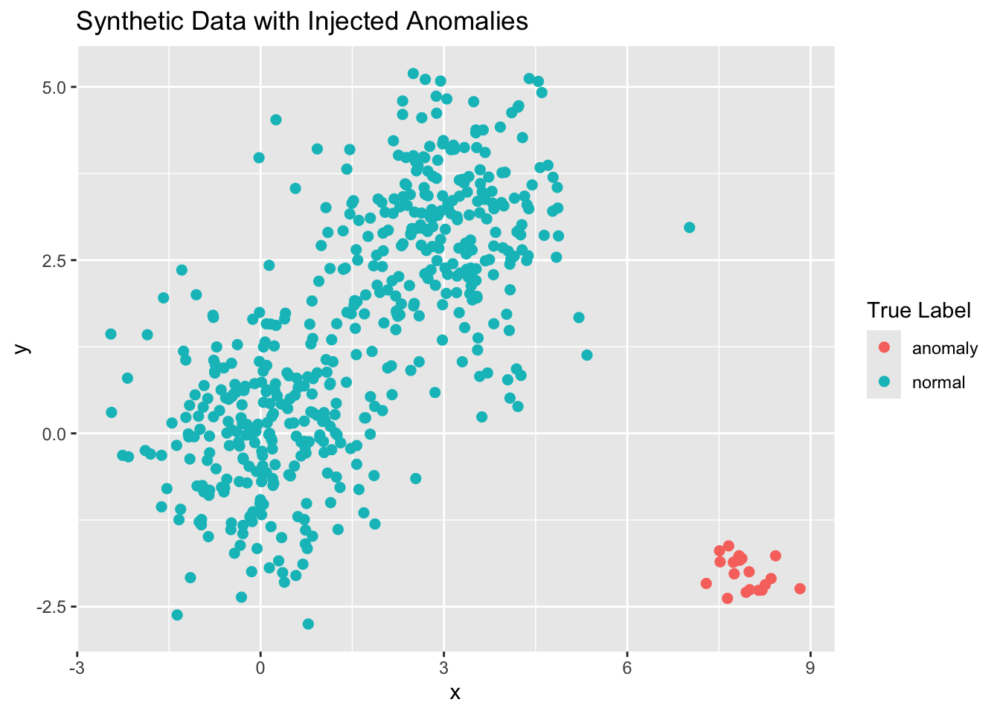
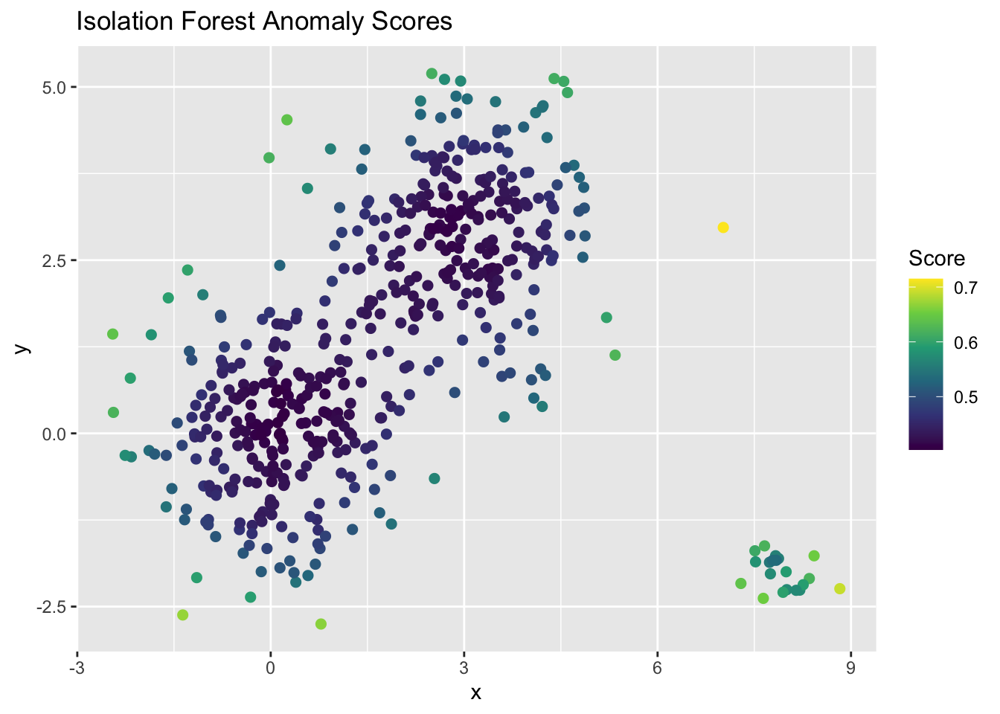
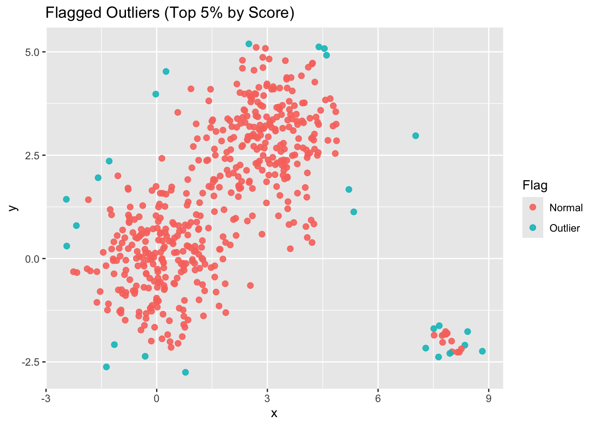
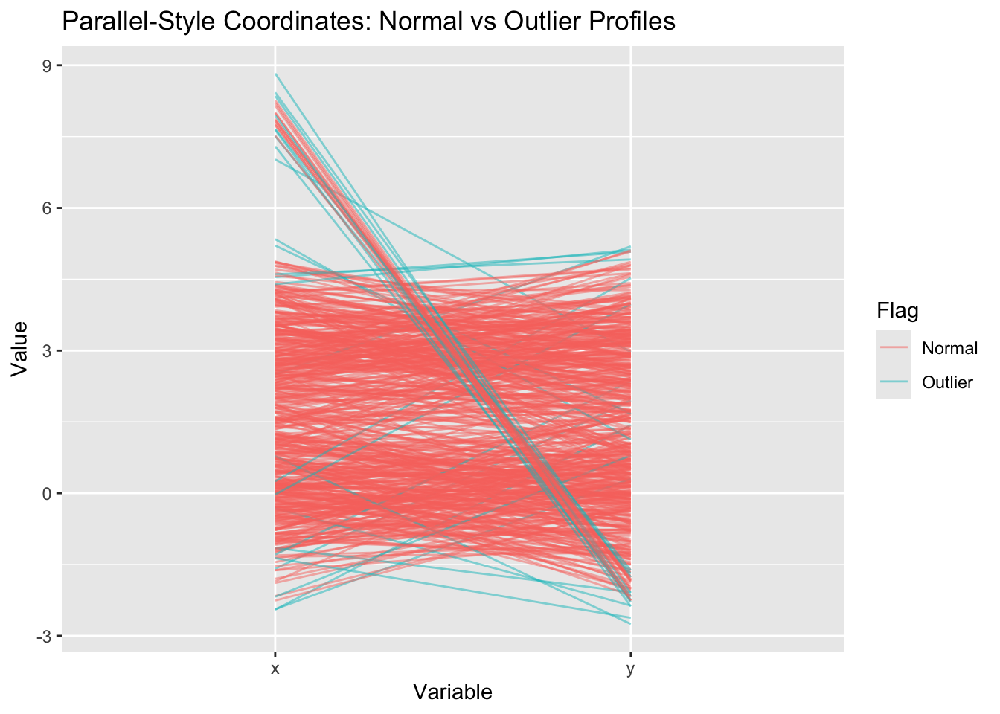
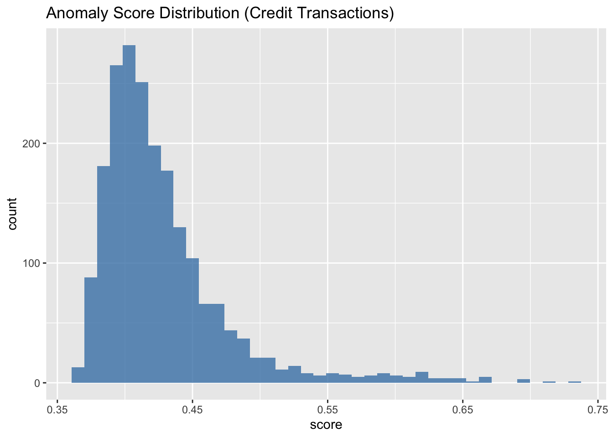
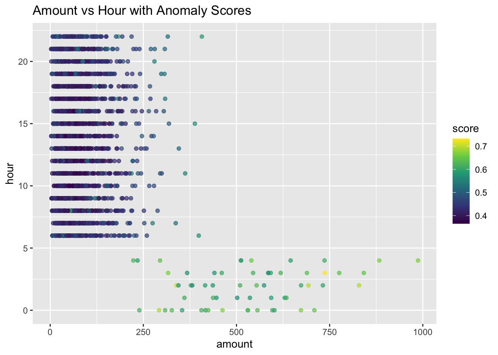
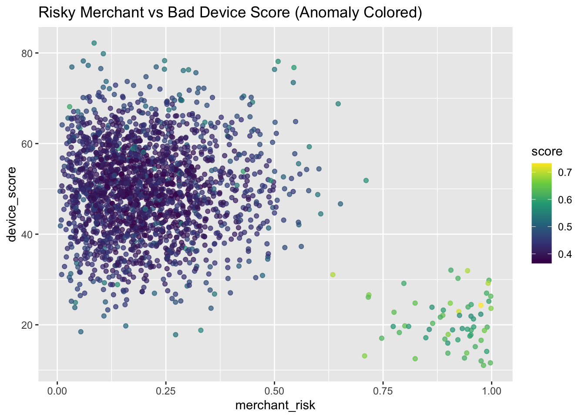
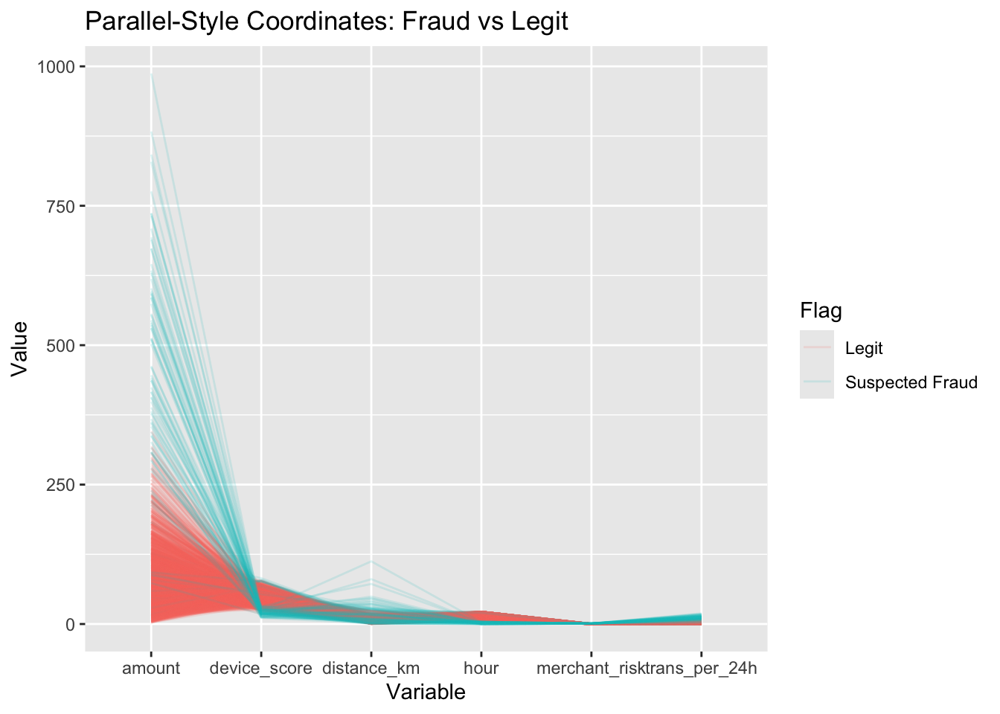

Code
library(tidyverse)
library(isotree)
set.seed(4321)After this notebook, you will be able to:
Understand Isolation Forest intuition
Generate synthetic data with injected anomalies
Fit Isolation Forest
library(tidyverse)
library(isotree)
set.seed(4321)Isolation Forest finds anomalies by isolating points with random partitions:
n <- 500
cluster1 <- tibble(
x = rnorm(n/2, 0, 1),
y = rnorm(n/2, 0, 1),
true_type = "normal"
)
cluster2 <- tibble(
x = rnorm(n/2, 3, 1),
y = rnorm(n/2, 3, 1),
true_type = "normal"
)
# Inject anomalies
anoms <- tibble(
x = rnorm(20, 8, 0.4),
y = rnorm(20, -2, 0.4),
true_type = "anomaly"
)
df <- bind_rows(cluster1, cluster2, anoms)
ggplot(df, aes(x, y, color = true_type)) +
geom_point(size = 2) +
labs(title = "Synthetic Data with Injected Anomalies",
color = "True Label")
iso_model <- isolation.forest(df[, c("x", "y")], ntrees = 500)
df$score <- predict(iso_model,
df[, c("x", "y")],
type = "score")
summary(df$score) Min. 1st Qu. Median Mean 3rd Qu. Max.
0.4033 0.4227 0.4400 0.4608 0.4760 0.7149 ggplot(df, aes(x, y, color = score)) +
geom_point(size = 2) +
scale_color_viridis_c() +
labs(title = "Isolation Forest Anomaly Scores",
color = "Score")
cutoff <- quantile(df$score, 0.95)
df$flag <- ifelse(df$score >= cutoff, "Outlier", "Normal")
table(df$flag)
Normal Outlier
494 26 ggplot(df, aes(x, y, color = flag)) +
geom_point(size = 2, alpha = 0.9) +
labs(title = "Flagged Outliers (Top 5% by Score)",
color = "Flag")
df %>%
arrange(desc(score)) %>%
slice(1:10)# A tibble: 10 × 5
x y true_type score flag
<dbl> <dbl> <chr> <dbl> <chr>
1 7.02 2.97 normal 0.715 Outlier
2 8.83 -2.24 anomaly 0.691 Outlier
3 -1.36 -2.62 normal 0.671 Outlier
4 0.780 -2.75 normal 0.665 Outlier
5 8.43 -1.77 anomaly 0.653 Outlier
6 7.64 -2.38 anomaly 0.653 Outlier
7 0.252 4.53 normal 0.641 Outlier
8 -2.45 1.43 normal 0.641 Outlier
9 7.29 -2.17 anomaly 0.641 Outlier
10 5.34 1.13 normal 0.624 Outliertable(Predicted = df$flag, Truth = df$true_type) Truth
Predicted anomaly normal
Normal 12 482
Outlier 8 18This version is 100% Quarto-safe, with no row_number() inside aes()
and no ggparcoord dependency.
# Clean factor
df_pc <- df %>%
mutate(flag = factor(flag, levels = c("Normal", "Outlier")))
# Create explicit, stable row ID
df_pc <- df_pc %>%
mutate(id = row_number())
# Long format for parallel-style plot
df_long <- df_pc %>%
pivot_longer(cols = c(x, y),
names_to = "Variable",
values_to = "Value")
# Plot
ggplot(df_long,
aes(x = Variable,
y = Value,
group = id,
color = flag)) +
geom_line(alpha = 0.5) +
labs(title = "Parallel-Style Coordinates: Normal vs Outlier Profiles",
color = "Flag")
This shows how outliers differ from normal points across variables.
If outliers consistently sit higher/lower on certain dimensions, they appear as distinct paths.
We simulate fraud-like behavior with:
set.seed(1234)
n <- 2000
# Normal transactions
norm <- tibble(
amount = rgamma(n, shape=2, scale=40),
hour = sample(6:22, n, replace=TRUE),
merchant_risk = rbeta(n, 2, 8),
device_score = rnorm(n, mean=50, sd=10),
distance_km = rgamma(n, shape=2, scale=3),
trans_per_24h = rpois(n, lambda=3),
true_type = "normal"
)
# Fraudulent transactions
fraud <- tibble(
amount = rgamma(60, shape=9, scale=60), # large
hour = sample(c(0,1,2,3,4), 60, replace=TRUE), # late night
merchant_risk = rbeta(60, 8, 1), # high risk
device_score = rnorm(60, mean=20, sd=5), # bad device score
distance_km = rgamma(60, shape=1, scale=20), # far distances
trans_per_24h = rpois(60, lambda=12), # high velocity
true_type = "fraud"
)
df <- bind_rows(norm, fraud)iso <- isolation.forest(df %>% select(-true_type), ntrees=600)
df$score <- predict(iso, df %>% select(-true_type), type="score")
summary(df$score) Min. 1st Qu. Median Mean 3rd Qu. Max.
0.3653 0.3969 0.4150 0.4279 0.4423 0.7326 ggplot(df, aes(score)) +
geom_histogram(bins=40, fill="steelblue", alpha=0.8) +
labs(title="Anomaly Score Distribution (Credit Transactions)")
cutoff <- quantile(df$score, 0.95)
df$flag <- ifelse(df$score >= cutoff, "Suspected Fraud", "Legit")
table(df$flag)
Legit Suspected Fraud
1957 103 table(Predicted=df$flag, Truth=df$true_type) Truth
Predicted fraud normal
Legit 0 1957
Suspected Fraud 60 43This gives insight into:
ggplot(df, aes(amount, hour, color=score)) +
geom_point(alpha=0.7) +
scale_color_viridis_c() +
labs(title="Amount vs Hour with Anomaly Scores")
Fraud transactions cluster at:
ggplot(df, aes(merchant_risk, device_score, color=score)) +
geom_point(alpha=0.7) +
scale_color_viridis_c() +
labs(title="Risky Merchant vs Bad Device Score (Anomaly Colored)")
Fraud behaviors:
df_pc <- df %>%
mutate(flag = factor(flag, levels=c("Legit","Suspected Fraud"))) %>%
mutate(id = row_number())
df_long <- df_pc %>%
pivot_longer(cols = c(amount, hour, merchant_risk, device_score, distance_km, trans_per_24h),
names_to = "Variable",
values_to = "Value")
ggplot(df_long, aes(x=Variable, y=Value, group=id, color=flag)) +
geom_line(alpha=0.15) +
labs(title="Parallel-Style Coordinates: Fraud vs Legit",
color="Flag")
This reveals fraud profiles across dimensions:
df %>%
arrange(desc(score)) %>%
slice(1:15)# A tibble: 15 × 9
amount hour merchant_risk device_score distance_km trans_per_24h true_type
<dbl> <dbl> <dbl> <dbl> <dbl> <int> <chr>
1 737. 3 0.975 24.3 112. 10 fraud
2 338. 2 0.924 22.9 80.4 5 fraud
3 829. 2 0.992 29.2 0.0882 17 fraud
4 693. 2 0.945 31.9 71.8 10 fraud
5 292. 0 0.634 31.1 46.1 9 fraud
6 462. 0 0.707 13.1 25.8 15 fraud
7 987. 4 0.900 17.9 1.44 10 fraud
8 673. 0 0.999 23.6 27.3 17 fraud
9 316. 3 0.717 26.6 15.6 18 fraud
10 883. 4 0.905 24.8 32.6 7 fraud
11 540. 4 0.983 18.8 8.63 19 fraud
12 842. 3 0.943 13.8 17.8 8 fraud
13 709. 0 0.824 12.5 5.25 12 fraud
14 295. 4 0.887 22.1 2.25 18 fraud
15 776. 3 0.824 24.8 27.8 5 fraud
# ℹ 2 more variables: score <dbl>, flag <chr>These represent the most abnormal behavior across multiple dimensions.
Isolation Forest in fraud analytics: